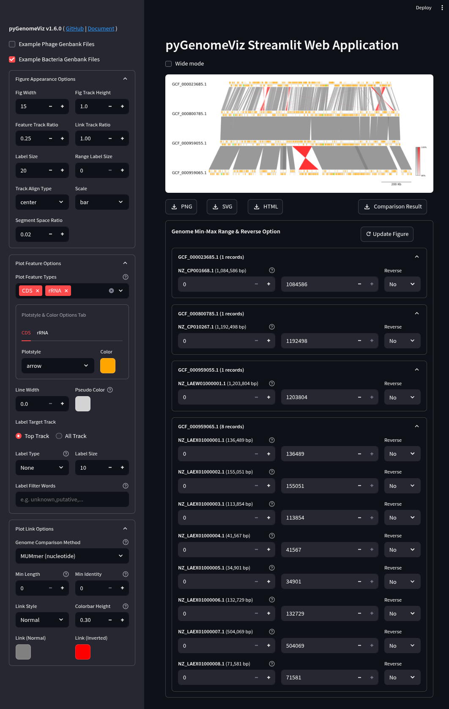

pgv-gui
pgv-gui command is used to launch the pyGenomeViz Web Application.
It is developed with the streamlit web application framework,
and users can easily visualize the genomic features of Genbank files and their comparison results with GUI.

Installation
Additional installation of streamlit is required. BLAST, MUMmer, MMseqs are also required to enable the genome comparison functionality.
Conda
conda install -c conda-forge -c bioconda pygenomeviz streamlit blast mummer mmseqs2
Pip
pip install pygenomeviz[gui]
On Ubuntu22.04 or later, BLAST, MUMmer, MMseqs can be installed with apt command.
sudo apt install ncbi-blast+ mummer mmseqs2
Docker
docker run -it --rm -p 8501:8501 ghcr.io/moshi4/pygenomeviz:latest pgv-gui
Usage
$ pgv-gui --help
usage: pgv-gui [options]
pyGenomeViz CLI for launching Streamlit Web Application
Users can access the web app with http://localhost:8501 (default).
optional arguments:
-p , --port Port number to open web browser (Default: 8501)
-v, --version Print version information
-h, --help Show this help message and exit
Info
By uploading a user Genbank file with a browser, a visualization figure of each genomic feature is automatically displayed. By setting each widget value, user can interactively change the appearance of the figure, genome comparison method, etc.
